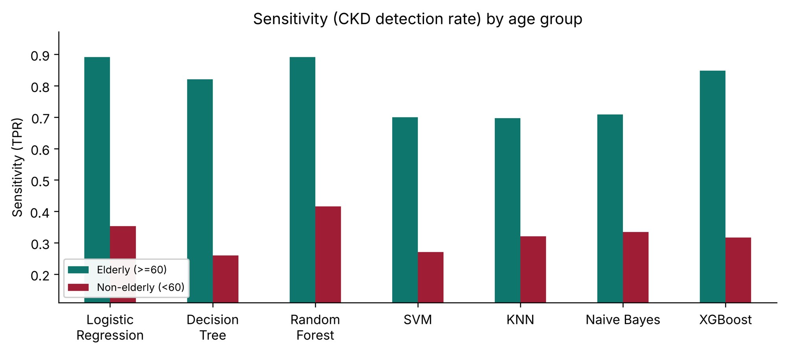
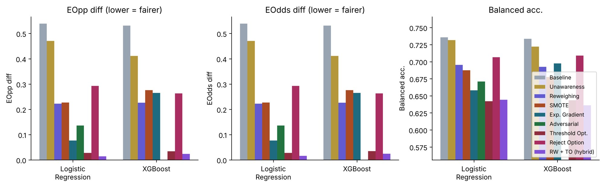
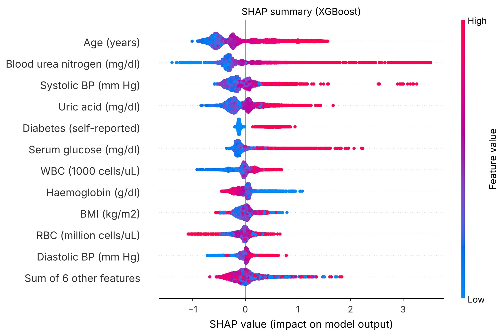
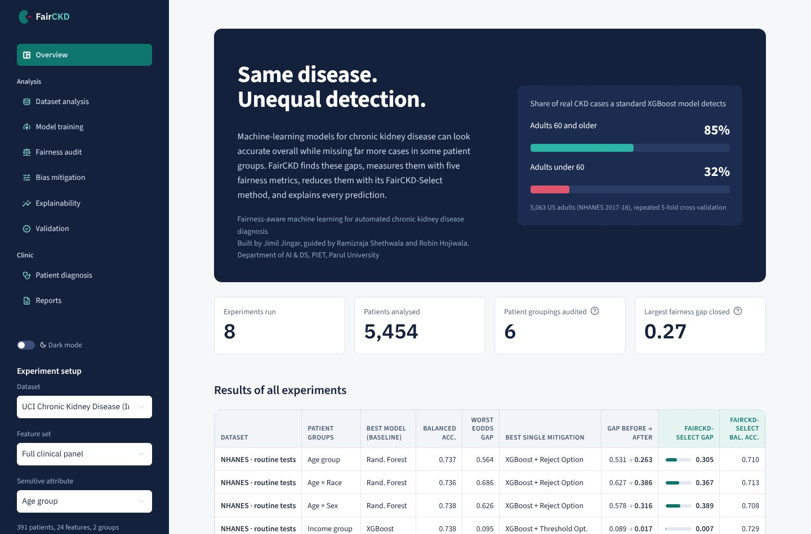
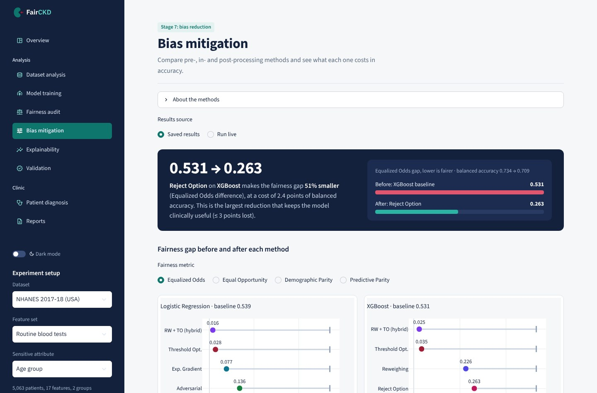
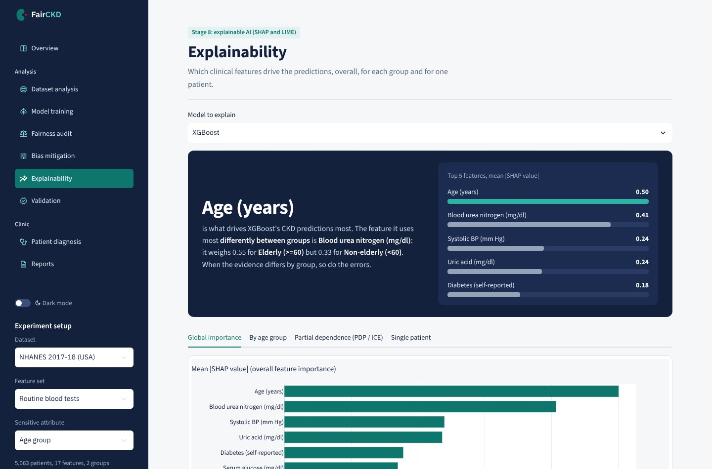
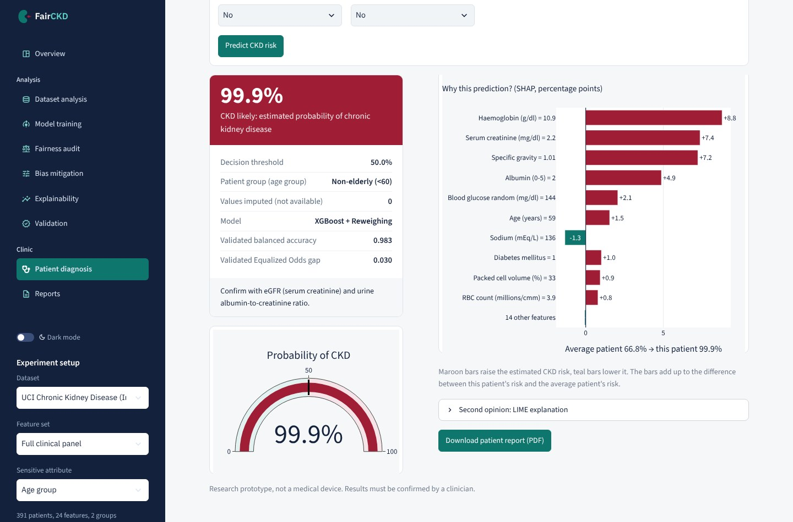

Machine-learning models for chronic kidney disease can look accurate overall while missing far more cases in some patient groups. FairCKD finds these gaps, measures them, reduces them, and explains every prediction.
A diagnosis model is usually judged by its overall accuracy. But when we split the results by patient group, every one of the seven models detects CKD far less often in younger adults. A missed case means a patient who does not get early treatment.

A standard pipeline goes from data to prediction. FairCKD adds a fairness layer in the middle that detects bias, measures it and reduces it before a model is used for patients.
Stages 5 to 7, in red, are the fairness layer that a standard diagnostic pipeline leaves out.
Sensitivity, false-positive rate and precision are compared for each group, then summarised with Demographic Parity, Disparate Impact, Equal Opportunity, Equalized Odds and Predictive Parity.
Pre-processing: Reweighing and group-balanced SMOTE. In-processing: Exponentiated Gradient and Adversarial Debiasing. Post-processing: Threshold Optimizer and Reject Option Classification. Plus a hybrid of Reweighing and Threshold Optimizer.
Inside each training fold, picks the model and mitigation with the smallest fairness gap while keeping balanced accuracy within 3 points of the best model. Evaluated with nested cross-validation.
Equalized Odds gap: the largest difference in error rates between patient groups (lower is fairer). FairCKD-Select reduced the gap in all eight experiments. Reject Option Classification was the strongest single method in four of them.
| Dataset | Patient groups | Feature set | Patients | Worst gap (7 models) | FairCKD-Select gap | Balanced acc. |
|---|---|---|---|---|---|---|
| NHANES | Age group | Routine blood tests | 5,063 | 0.564 | 0.305 | 0.710 |
| NHANES | Age × Race | Routine blood tests | 5,063 | 0.686 | 0.367 | 0.713 |
| NHANES | Age × Sex | Routine blood tests | 5,063 | 0.626 | 0.389 | 0.708 |
| NHANES | Race/ethnicity | Routine blood tests | 5,063 | 0.259 | 0.113 | 0.721 |
| NHANES | Income group | Routine blood tests | 4,411 | 0.095 | 0.007 | 0.729 |
| NHANES | Sex | Routine blood tests | 5,063 | 0.088 | 0.028 | 0.726 |
| UCI (India) | Age group | Full clinical panel | 391 | 0.046 | 0.012 | 0.993 |
| UCI (India) | Age group | Primary-care screening | 391 | 0.138 | 0.039 | 0.909 |


Everything can be explored in the browser: choose a dataset and a patient attribute, audit a model, compare mitigation methods, and diagnose a new patient with a downloadable PDF report.




No installation needed. The app opens in your browser with all results already loaded.